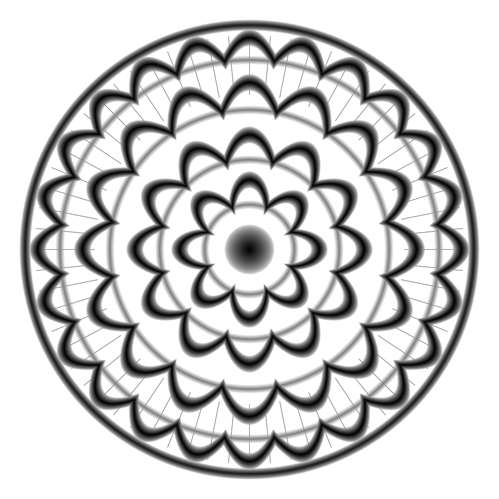
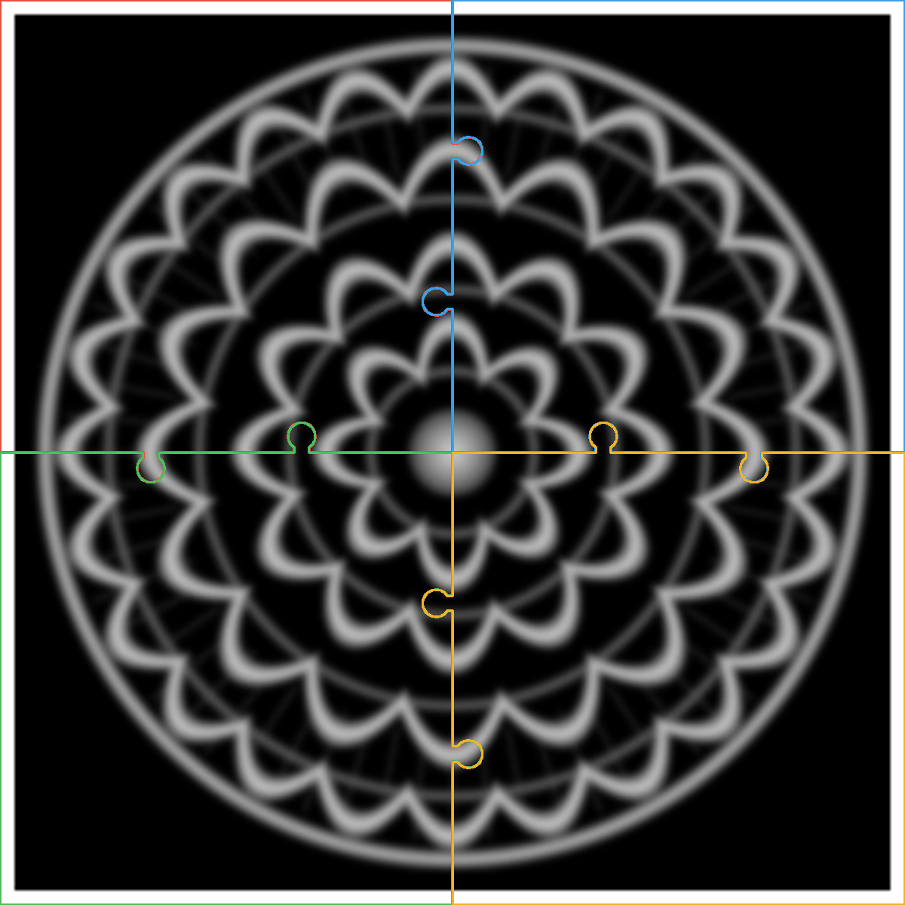

Open source · Impresión 3D
Tu imagen,en relieve.
Convierte cualquier foto, dibujo o logo en un cuadro 3D de 62 cm, dividido en cuatro piezas que encajan como un rompecabezas.
Cómo funciona
De fotoa STL.
Un solo comando. Cada tono de gris se convierte en una altura: lo oscuro sobresale y lo claro queda en la base.

Tu imagen
JPG o PNG. Funciona mejor con buen contraste: siluetas, logos o dibujos de líneas.
Mapa de alturas
Base de 3 mm y relieve de hasta 4 mm, con marco elevado. Todo ajustable.

Cuatro STL
Piezas cerradas y sin errores de malla, listas para Creality Print, Bambu Studio u Orca.
El encaje
Encaja.Sin tornillos.
Dos pestañas de rompecabezas en cada unión, con 0,25 mm de holgura calculada. Las piezas entran firmes y alineadas. Una gota de pegamento por detrás y ya es una sola pieza.
Pensado para tu impresora
Grande.Por partes.
Un cuadro que nunca cabría en la cama, partido en piezas que sí caben. Ajustado para la Creality K2 Plus, y adaptable a cualquier impresora.
Empezar
Imprimeel tuyo.
Sube tu imagen al generador y descarga las 4 piezas en segundos. Sin instalar nada: todo pasa en tu navegador.
¿Prefieres la línea de comandos? También puedes usarlo en Python:
$ git clone https://github.com/fleremiasflemin20-maker/cuadros-3d-puzzle $ cd cuadros-3d-puzzle $ python3 -m venv .venv $ .venv/bin/pip install -r requirements.txt $ .venv/bin/python cuadro_puzzle.py mi_foto.jpg # → salida_mi_foto/ con 4 STL + vista_previa.png
--ancho 620
--relieve 4
--base 3
--marco 10
--holgura 0.25
--invertir
--cama 350